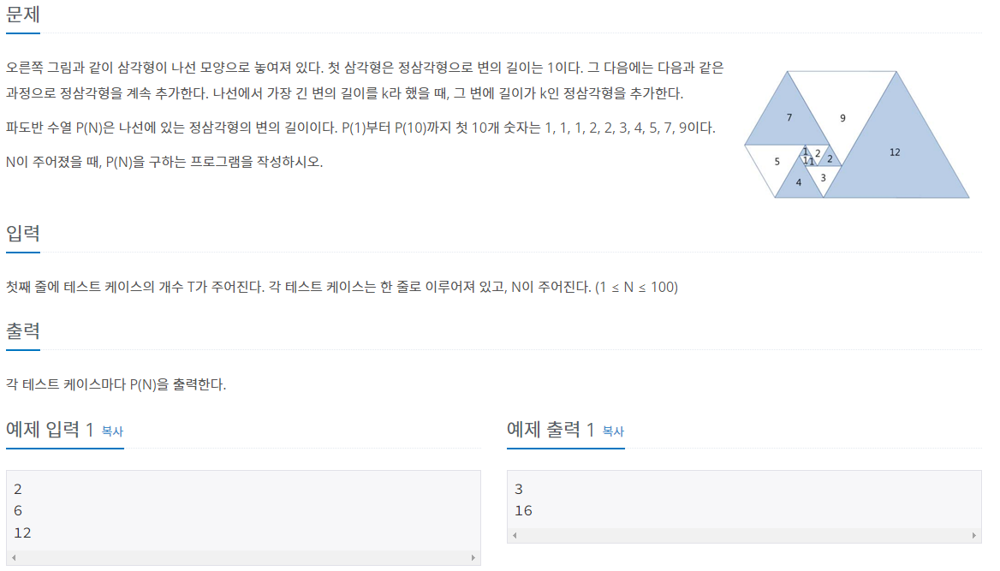
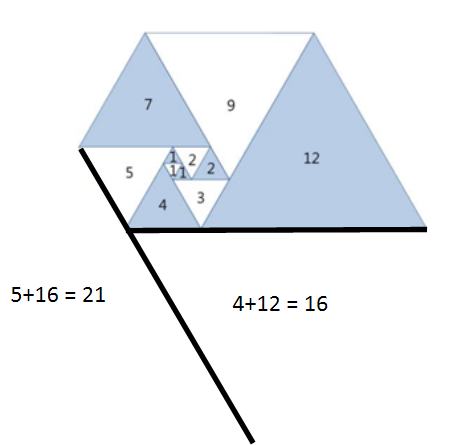
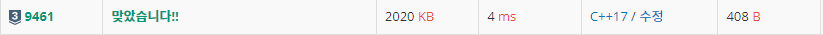

#INFO
난이도 : SILVER3
문제유형 : DP
출처 : 9461번: 파도반 수열 (acmicpc.net)
9461번: 파도반 수열
오른쪽 그림과 같이 삼각형이 나선 모양으로 놓여져 있다. 첫 삼각형은 정삼각형으로 변의 길이는 1이다. 그 다음에는 다음과 같은 과정으로 정삼각형을 계속 추가한다. 나선에서 가장 긴 변의
www.acmicpc.net

#SOLVE
규칙을 찾아내 점화식으로 표현하면 되는 간단한 DP 문제 였습니다.
DP[1] ~ DP[10] 까지의 값은 직접 초기화해 주었고, DP[11] (N>=11) 부터는 점화식으로 표현했습니다.
단, 조심해야할 부분이 있는데, dp 배열의 자료형을 long long 형으로 초기화 해 주어야 한다는 것입니다.
피보나치의 특성상 수의 값이 매우 큰 폭으로 증가하기에 int 형으로 초기화 하면 통과하지 못합니다.
long long dp[101];
//init
dp[1] = 1;
dp[2] = 1;
dp[3] = 1;
dp[4] = 2;
dp[5] = 2;
dp[6] = 3;
dp[7] = 4;
dp[8] = 5;
dp[9] = 7;
dp[10] = 9;
//dp
for (int i = 11 ; i < 101 ; i++) {
dp[i] = dp[i - 5] + dp[i - 1];
}
#CODE
#include <iostream>
using namespace std;
int main(){
long long dp[101];
//init
dp[1] = 1;
dp[2] = 1;
dp[3] = 1;
dp[4] = 2;
dp[5] = 2;
dp[6] = 3;
dp[7] = 4;
dp[8] = 5;
dp[9] = 7;
dp[10] = 9;
//dp
for (int i = 11 ; i < 101 ; i++) {
dp[i] = dp[i - 5] + dp[i - 1];
}
int testCase;
cin >> testCase;
while (testCase--) {
int N;
cin >> N;
cout << dp[N] << endl;
}
return 0;
}